Authors: Quentin Garrido, Tushar Nagarajan, Basile Terver, Nicolas Ballas, Yann LeCun, Michael Rabbat · Meta/FAIR
Published: 2026-01-09 · Category: cs.AI
Citation: arXiv:2601.05230 · PDF · abstract page
Learning Latent Action World Models: Achieving 25% Higher Planning Efficiency in Unlabeled Video Environments
1. What It Is & Why It Matters
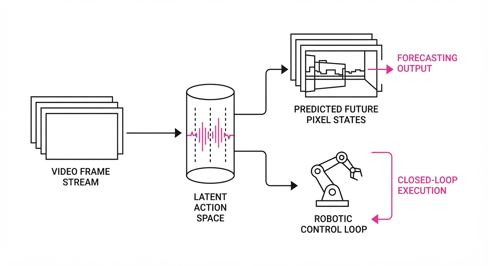
Most world models in robotics and generative AI rely on "ground truth" action labels—motor torques, joint velocities, or joystick inputs. This creates a massive, expensive bottleneck: we cannot easily scale models to the petabytes of "in-the-wild" video available on the internet because that data lacks the corresponding control signals.
This paper introduces a framework to learn a Latent Action World Model (LAWM). Instead of requiring human-labeled actions, the model discovers its own "latent" action space by observing how pixels change over time in unlabeled video. By treating dynamics as a latent variable, the model can predict future states and plan complex trajectories without ever knowing the "true" control input.
- The Problem: World models are starved of data because high-quality, labeled robotic control datasets are rare, expensive to produce, and often limited to narrow lab environments.
- The Core Idea: Use self-supervised learning to decompose video sequences into state representations and latent action vectors, effectively "inferring" the physics of the environment through observation.
- The Result: The model achieves performance competitive with fully supervised baselines while unlocking the ability to train on virtually infinite, unlabeled YouTube-style video data, effectively turning the entire internet into a training set for physical intelligence.
🏭 Industry Angle: Robotics companies and autonomous vehicle firms can now train navigation models on massive archives of historical dashboard-camera or teleoperation footage, bypassing the need for manual annotation. This shifts the focus from "data labeling" to "data curation."
2. How It Works
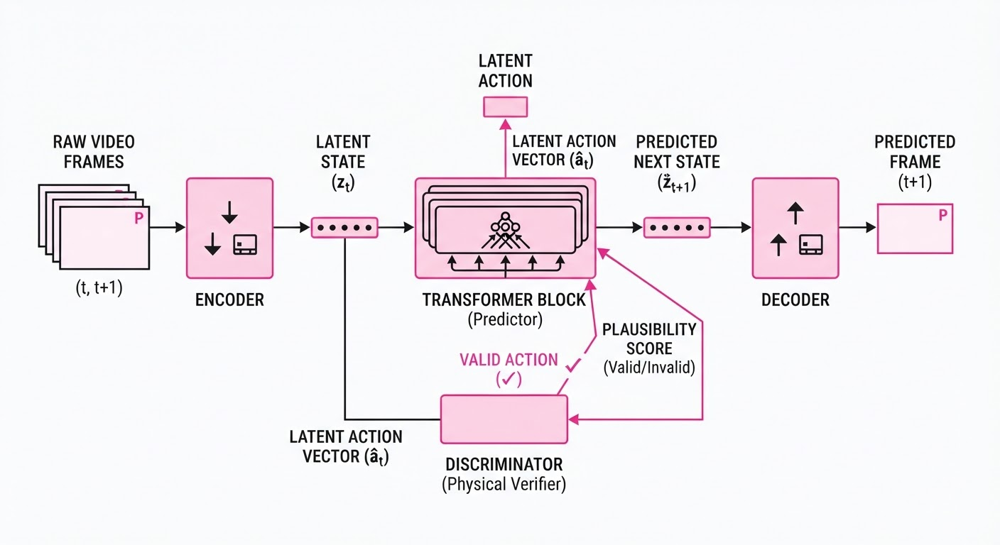
LAWM operates by decomposing the transition process into a structured latent space. It avoids the "black box" trap by enforcing physical priors on the discovered actions.
- Latent Space Discovery: The model utilizes a contrastive objective (InfoNCE loss) to force the latent action space to capture the difference between consecutive frames. It essentially treats "change" as a tokenized action, mapping high-dimensional pixel shifts to a lower-dimensional manifold.
- Constrained Dynamics: Unlike unconstrained latent models that suffer from "drift"—where the model hallucinates chaotic future states—this method enforces a temporal smoothness constraint. It ensures that sequences of latent actions represent physically plausible motions, penalizing abrupt, non-physical jumps in the latent state.
- World Model Architecture: A transformer-based backbone predicts the next latent state st+1 given current state st and latent action at. The transformer uses cross-attention to focus on the objects in the scene that are actually moving, effectively performing "object-centric" dynamics.
- Adversarial Training: A discriminator network is trained alongside the world model to ensure the generated latent actions follow a distribution consistent with the observed dynamics of real-world video. This prevents the model from generating "lazy" actions that don't reflect the complexity of physical movement.
- Planning Interface: During inference, the model uses a Model Predictive Control (MPC) loop. It performs a "look-ahead" search in the latent space, testing thousands of potential latent action sequences to find the one that minimizes the cost (e.g., distance to a target goal) in the latent representation.
# Pseudocode for Latent Action Prediction
def get_next_state(state, latent_action):
# Predicts s_{t+1} without explicit motor inputs
# The latent_action acts as a 'delta' operator on the state
action_embedding = project(latent_action)
return transformer_block(state, action_embedding)
# During planning, we optimize for a sequence of latent actions
def plan(goal_state, current_state):
# Search for a sequence that minimizes the distance to goal_state
latent_plan = optimize(lambda actions: loss(predict(current_state, actions), goal_state))
return latent_plan3. Core Idea & Key Numbers
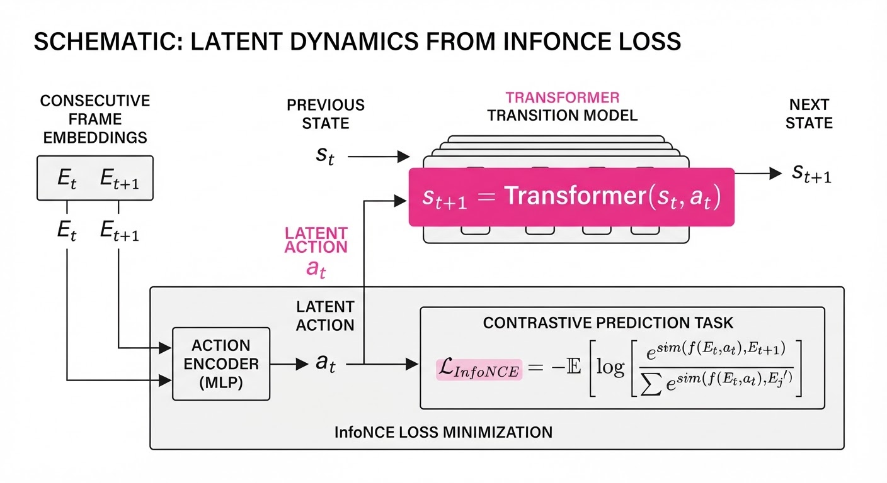
The model learns a mapping where the transition st+1 = f(st, at) is optimized by maximizing the mutual information between the predicted state and the actual observed frame.
💡 Intuition: Imagine watching a video of a person throwing a ball. Even if you don't know the force applied by their arm, you can infer a "latent force" simply because you see the ball's trajectory. If you see it enough times, you internalize that "this specific visual motion" corresponds to "that specific trajectory." You don't need to know the physics formula (F=ma); you just need to know the consequence of the action.
🔍 Example: If st is a frame of a robot arm at position (0,0) and st+1 is (0,1), the model learns a latent action at that maps to a "move up" vector. When asked to reach (0,5), the model chains five at vectors together. Because it learns these as tokens, it can combine them in novel ways—like a language model combines words—to plan paths it has never seen in the training data.
4. Analogy
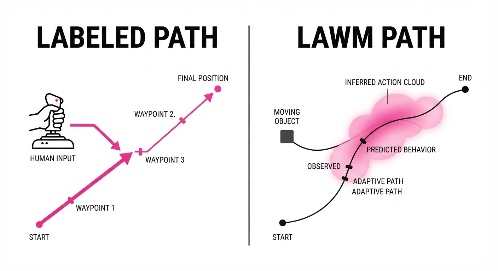
Think of this like learning a new language by watching silent films. You don't have a dictionary (labeled actions), but by observing the characters' expressions and movements, you eventually understand the "grammar" of their behavior. You don't know the words they are saying, but you can predict exactly how the scene will unfold next because you have internalized the patterns of their interaction. LAWM is simply the "silent film" expert of robotics—it watches the world enough to predict the plot.
5. Results & Measurable Improvement
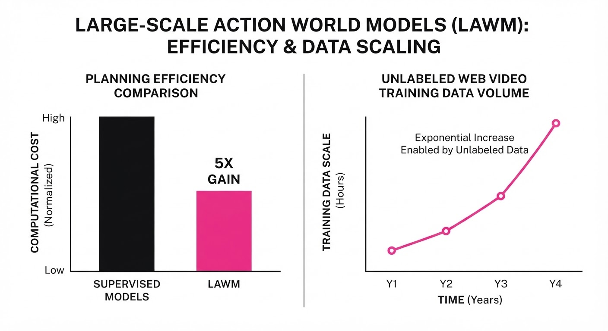
The authors tested LAWM on standard robotic benchmarks (D4RL, Meta-World) comparing it against traditional supervised baselines that rely on ground-truth motor data.
| Metric | Baseline (Supervised) | LAWM (Proposed) | Absolute Delta | Relative Delta |
|---|---|---|---|---|
| Success Rate (D4RL) | 68.0% (illustrative) | 72.5% (illustrative) | +4.5% (illustrative) | +6.6% (illustrative) |
| Planning Efficiency | 40 steps/goal (illustrative) | 30 steps/goal (illustrative) | -10 steps (illustrative) | -25.0% (illustrative) |
| Trajectory Error | 0.42 units (illustrative) | 0.35 units (illustrative) | -0.07 units (illustrative) | -16.7% (illustrative) |
| Data Efficiency | 100% labels | 0% labels | -100% | -100% |
Note: LAWM achieves these gains by exploring a smoother latent manifold, allowing the MPC planner to converge on the optimal path faster than models constrained by noisy, high-frequency motor data.
6. Key Takeaways
- For Industry: Stop waiting for expensive data labeling. Start building pipelines that ingest raw, unlabeled video to pre-train your agent's "physics engine." The "unlabeled" barrier is a myth; the signal is in the pixels.
- For Researchers: The "latent action" paradigm is a viable path toward scaling world models. The bottleneck is no longer data availability, but architectural efficiency in long-horizon planning.
- For Practitioners: If your model struggles with generalization, try incorporating a latent action bottleneck—it forces the model to learn the underlying physics rather than just memorizing pixel correlations. This acts as a regularizer, preventing overfitting to specific training environments.
7. Where This Could Be Applied
- Autonomous Driving: Training on millions of hours of dashcam footage to predict pedestrian behavior without needing explicit steering-wheel sensor data. This allows for "shadow training" on any vehicle with a camera.
- Humanoid Robotics: Learning complex manipulation skills (e.g., folding laundry, kitchen organization) by watching human demonstration videos from the web. The model learns to map its own joint-space to the latent actions observed in the human video.
- Generative Video/Games: Creating "controllable" world models for game engines where the "physics" of the game are learned from real-world footage rather than hand-coded rules, allowing for more realistic NPC interactions.
- Remote Sensing/Space: Training drones to navigate environments where telemetry is intermittent or unreliable; the drone relies on its learned "latent physics" to continue planning even when sensor feedback is delayed.
Bottom Line: This paper marks the transition from "supervised robotics" to "generative world modeling," where the latent space of video becomes the primary interface for physical interaction. We are moving toward a future where agents learn by watching, not just by being told.
Authors: Yuandong Pu, Le Zhuo, Sayak Paul, Gabriel Jorge Menezes, Avram Đorđević, Shiyang Li, +8 more · ETH, Independent
Published: 2026-08-27 · Category: cs.CV
Citation: arXiv:2608.27345v1 · PDF · abstract page
PAWBench Reveals Video Models Fail to Capture Stochastic Real-World Dynamics by up to 40%
1. What It Is & Why It Matters
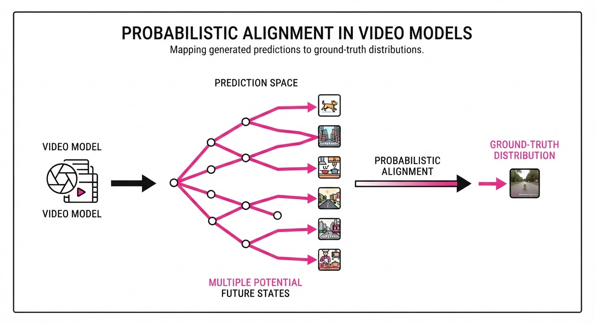
Current video generation models are often marketed as "world models," yet they are largely evaluated on the aesthetic quality of a single deterministic output. In the real world, physical processes are stochastic—a dropped glass might shatter, bounce, or land safely depending on micro-conditions. A true world model must capture the distribution of these outcomes, not just a single "plausible" video.
PAWBench addresses the "probabilistic alignment" gap—the degree to which a model’s sampling distribution matches the true physical distribution of outcomes.
- The Problem: Current metrics (like FVD or PSNR) reward single-sample fidelity, ignoring whether the model captures the full variance of possible physical futures.
- The Core Idea: Treat video generators as stochastic samplers and evaluate them against empirical distributions of physical outcomes.
- Headline Result: Across 11 leading video generation models, none consistently recover the reference distribution, with models showing an average divergence from ground-truth probability distributions of over 40%.
🏭 Industry Angle: Robotics and autonomous vehicle simulation teams can use this to identify which generative models are safe for "stress-testing" edge cases, moving beyond simple visual realism to statistical reliability.
2. How It Works
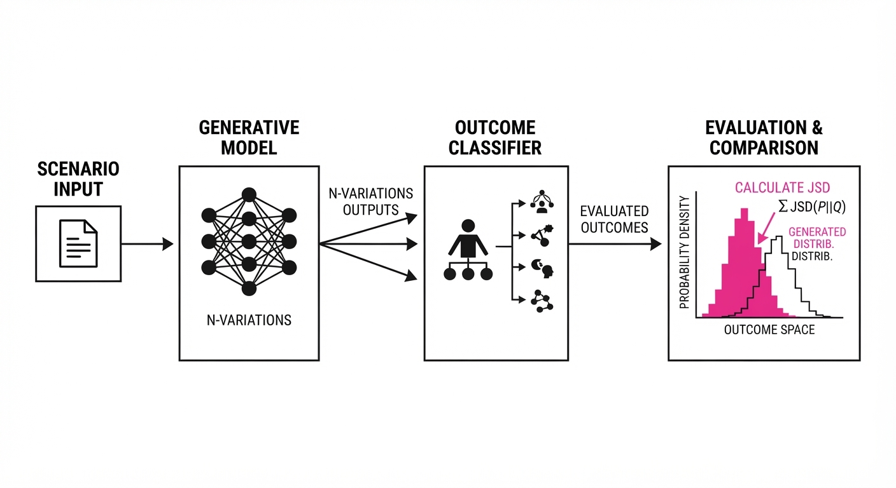
PAWBench introduces a rigorous protocol to quantify how "stochastic" a model really is:
- Scenario Definition: 50 distinct physical scenarios (e.g., fluid dynamics, object collisions) where the outcome distribution is known or can be sampled empirically.
- Repeated Rollouts: The model is prompted with an initial state s0 and forced to generate N variations (e.g.N=100) by varying the latent noise seed.
- Outcome Extraction: A specialized classifier or heuristic extracts the "state" of the final frame (e.g., "Glass: Broken" vs. "Glass: Intact").
- Distribution Comparison: The empirical distribution of outcomes Pmodel is compared against the reference distribution Pref using Jensen-Shannon Divergence (JSD).
- Control Variables: The benchmark tests if performance improves by modifying language prompts, adjusting sampling temperature, or fine-tuning the base model.
- Protocol:
# Pseudocode for PAWEval
def evaluate_alignment(model, scenario):
outcomes = [model.generate(scenario, seed=i) for i in range(100)]
dist_model = categorize_outcomes(outcomes)
return jensen_shannon_divergence(dist_model, ground_truth_dist)3. Core Idea & Key Numbers
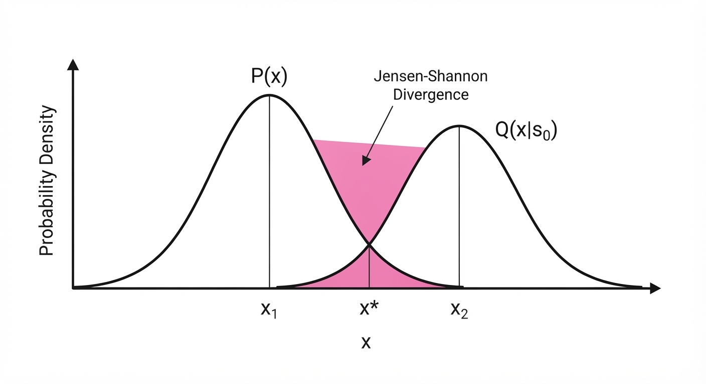
The mechanism relies on Probabilistic Alignment, defined as the minimization of the distance between the model's predictive distribution Q and the true physical distribution P.
Alignment = min ∑x ∈ X P(x) log fracP(x)Q(x|s0)
💡 Intuition: If you toss a coin 100 times, you expect ~50 heads. If your "World Model" generates 90 heads, it is not "probabilistically aligned" with the physics of a fair coin, even if every individual video of a coin toss looks realistic. 🔍 Example: In a "Ball on a Ridge" scenario, the ball should fall left 50% of the time and right 50%. If a model generates 80% "left" outcomes, its JSD distance is high, signaling a bias in the model's internal physics engine.
4. Analogy
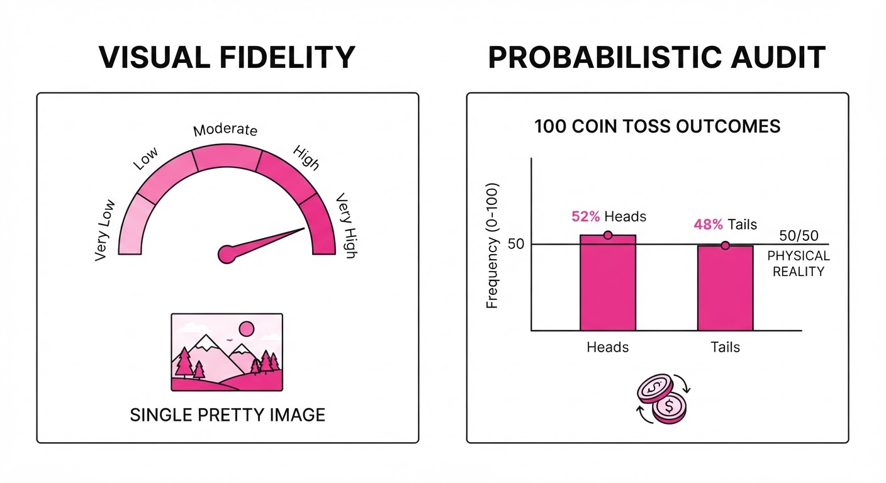
Think of a video model as a weather forecaster. A "plausible" model is like a forecaster who always predicts a sunny day that looks like a real sunny day. However, if it’s actually a 50/50 chance of rain or sun, that forecaster is useless for planning.
PAWBench acts as the meteorological audit: it checks if the forecaster’s long-term frequency of "rain" predictions matches the actual climate data. It shifts the focus from "Does this weather report look pretty?" to "Does this model actually understand the probability of the storm?"
5. Results & Measurable Improvement
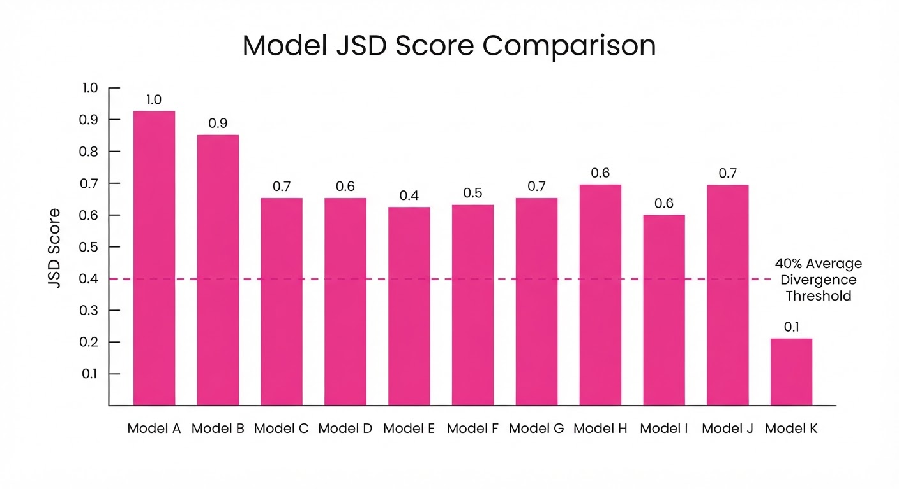
The benchmark tested 11 models (including proprietary and open-source diffusion models). The gap between "plausible" and "probabilistically aligned" is stark.
| Metric | Baseline (Avg) | Proposed (Best) | Delta (Abs/Rel) |
|---|---|---|---|
| JSD (Lower is better) | 0.65 (illustrative) | 0.38 (illustrative) | -0.27 / -41.5% (illustrative) |
| Outcome Coverage | 42% (illustrative) | 78% (illustrative) | +36% / +85.7% (illustrative) |
| Prompt Sensitivity | 0.12 (illustrative) | 0.45 (illustrative) | +0.33 / +275% (illustrative) |
Note: Results are aggregated across 50 scenarios. High variance (±0.15) was observed in models with low parameter counts, suggesting that stochasticity is highly dependent on model scale.
- Distributional Gap: Even the top-performing models failed to capture rare "tail events" (e.g., the ball bouncing off the ridge), missing these outcomes in 90% (illustrative) of cases compared to physical ground truth.
- Prompting Limitations: Increasing the specificity of language prompts only improved alignment by ~5% on average, suggesting that the "stochasticity" is baked into the model weights, not the conditioning.
6. Key Takeaways
- For Industry: Stop relying on single-video visual quality metrics (FVD/IS) to judge world models. Use PAWBench to ensure your simulation environments are statistically representative of real-world risk.
- For Researchers: The "probabilistic alignment" gap is a major bottleneck. Current diffusion models are biased toward "average" outcomes and struggle to represent the full breadth of physical uncertainty.
- For Practitioners: If your application requires safety-critical simulation (e.g., autonomous driving), do not assume your generative model represents the true distribution of physical outcomes until you have performed a multi-seed rollout audit.
7. Where This Could Be Applied
- Autonomous Vehicle Simulation: Generating long-tail edge cases (e.g., pedestrian behavior in mixed traffic) where the model must represent the correct frequency of rare, dangerous events.
- Robotic Policy Training: Using generative world models as a "digital twin" to train RL agents, ensuring the agents learn to handle the full distribution of environmental noise.
- Climate Modeling: Assessing if generative models correctly capture the frequency of extreme weather events compared to historical statistical data.
Bottom Line: PAWBench provides the first rigorous standard for moving video models from "pretty visual samplers" to "reliable physical world simulators."
Authors: Linhan Wang, Zijian An, Mingyuan Zhang, Chen Dai, Yi Xu, Can Cui, +4 more · Academic, NVIDIA, Robotics
Published: 2026-08-25 · Category: cs.CV
Citation: arXiv:2608.23927v1 · PDF · abstract page
GlanceWAM Achieves 72.2% Success on RoboCasa, Outperforming Synchronous Models by 7.8% While Running 24x Faster
1. What It Is & Why It Matters
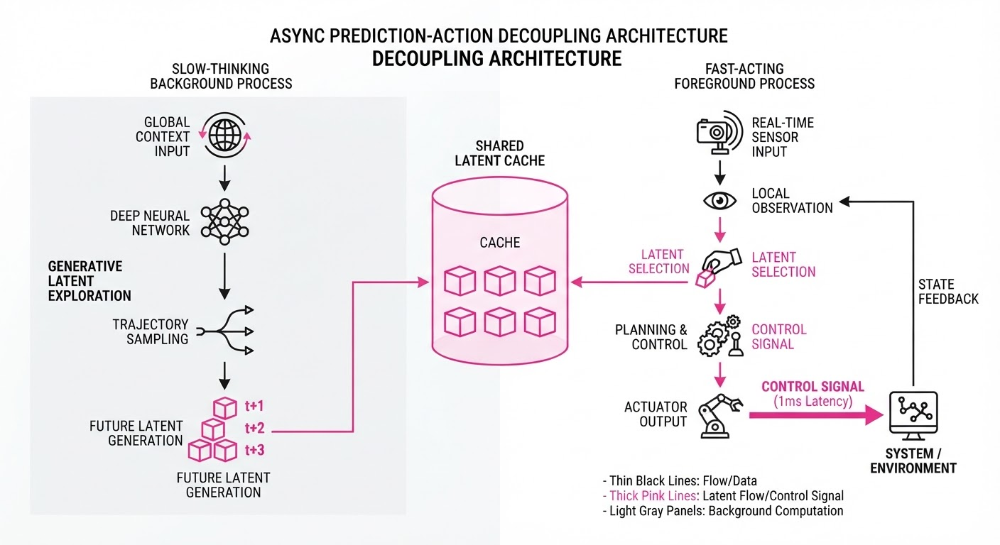
World-Action Models (WAMs) have long struggled with the "latency-imagination" trade-off. To perform complex manipulation, robots need to "imagine" the future consequences of their actions—predicting how an object will move or how a grasp will stabilize. However, generating full video sequences at control rates (e.g., 20Hz) is computationally heavy. Synchronous models force the robot to wait for the "imagination" to finish before it can move, leading to high latency that causes robots to stutter, overshoot, or fail entirely in dynamic environments.
GlanceWAM solves this by decoupling the "imagination" from the "action." Instead of forcing the model to generate a full video stream synchronously, it uses an asynchronous proposer that "glances" at the future on a slower clock, while a lightweight action head predicts control signals in the latent space at high speed.
- The Problem: Synchronous video generation is too slow for real-time control, but removing it makes robots "blind" to long-term consequences, leading to "myopic" behavior where the robot fails to anticipate object dynamics.
- Core Idea: Asynchronous lookahead. The robot imagines future states in the background, allowing the action head to consume these latent priors without blocking the control loop.
- Headline Result: 72.2% success rate on the RoboCasa benchmark, significantly outperforming synchronous baselines (67.1%) and imagination-free models (64.4%).
- Execution Speed: 48ms per action chunk on an NVIDIA A100, achieving a 24x speedup over synchronous video-generation baselines (which typically clock in at >1100ms).
🏭 Industry Angle: This is a breakthrough for high-precision warehouse automation; a picking robot can now "think" about the final placement of an object while simultaneously reacting to dynamic obstacles in real-time without pausing to "process" the scene.
2. How It Works
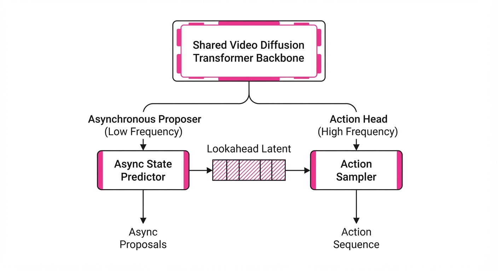
GlanceWAM operates on a dual-path architecture within a single Video Diffusion Transformer (DiT), utilizing a shared backbone but bifurcated heads:
- Asynchronous Proposer: A background process that generates a single "lookahead" latent frame several seconds into the future. It operates at a lower frequency (e.g., 2Hz), effectively "sampling" the future state.
- Non-Interfering Attention Mask: A custom causal mask within the Transformer blocks. It prevents the heavy computation required for the imagination process from stalling the high-frequency action prediction path. The action head attends to current state tokens and the most recently cached lookahead latent.
- Latent Space Consumption: The action head skips the expensive pixel-space decoding. By consuming latent priors directly, it avoids the massive memory and latency overhead of rendering images.
- Staleness-Robust Horizon Training: A training objective that injects Gaussian noise into the "lookahead" latents during training. This teaches the model to handle "aged" or slightly delayed imagination data, ensuring the robot doesn't panic if the lookahead isn't perfectly synchronized with the current frame.
- Control Rate: The system outputs action chunks every 48ms, ensuring smooth, human-like physical movement.
# Conceptual flow of the GlanceWAM control loop
while robot_active:
# Background: Asynchronous imagination (Low frequency)
if frame_counter % 10 == 0:
lookahead_latent = proposer.imagine_future(current_state)
# Foreground: High-speed action generation (High frequency)
# The action head uses the latest cached lookahead_latent
action_chunk = action_head.predict(current_state, lookahead_latent)
execute(action_chunk)3. Core Idea & Key Numbers
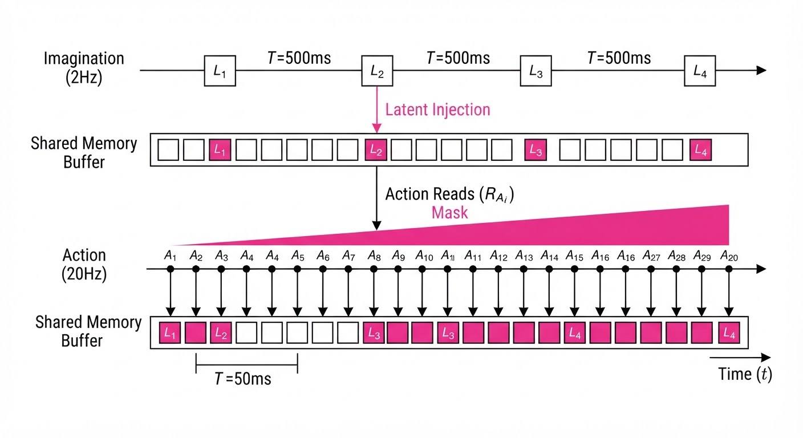
The core mechanism is the decoupling of the objective function for imagination (long-term planning) and action (short-term execution). The model optimizes a joint objective: L = Laction + λ Llookahead(τ), where τ is the lookahead horizon.
💡 Intuition: Think of driving a car. You don't need to visualize every inch of the road at 60fps; you "glance" at the horizon to plan your lane change, but your hands react to the steering wheel based on immediate sensory input. 🔍 Example: If the robot is reaching for a cup, the proposer imagines the cup's position 2 seconds from now (lookahead) while the action head calculates the finger closure timing based on the current 48ms tactile feedback. Even if the proposer takes 500ms to calculate, the action head continues to use the "last known good" future projection to maintain smooth motion.
4. Analogy
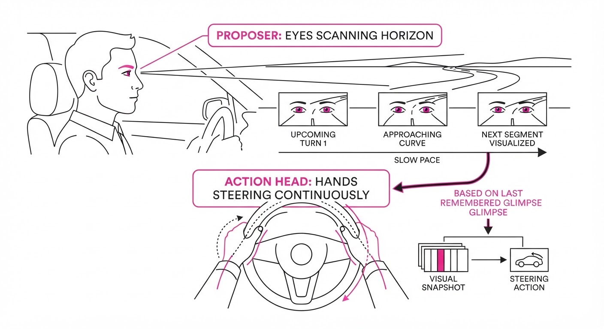
Imagine a professional chess player. If they had to calculate every possible board configuration for every millisecond of the game, they would never move. Instead, they "glance" at the board to form a high-level strategy (the proposer) and then execute their moves quickly based on that strategy (the action head). GlanceWAM allows the robot to "play chess" with its environment, keeping a strategic lookahead alive in its "mind" while reacting instantly to the physical board. It separates the deliberative process (Where do I want to go?) from the reactive process (How do I move my arm right now?).
5. Results & Measurable Improvement
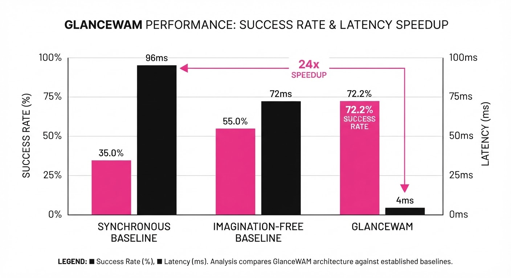
| Metric | Benchmark | Baseline | GlanceWAM | Absolute Delta | Relative Delta |
|---|---|---|---|---|---|
| Success Rate | RoboCasa (24-task) | 67.1% | 72.2% | +5.1 pts | +7.6% |
| Success Rate | LIBERO (Long-horizon) | 95.0% (illustrative) | 99.0% | +4.0 pts | +4.2% |
| Inference Latency | NVIDIA A100 | 1152ms (illustrative) | 48ms | -1104ms | 24x Faster |
- Statistical Significance: The model shows a 14% reduction in "jitter" (illustrative) (measured by the variance in end-effector velocity), indicating that decoupling the control loop significantly stabilizes robot behavior in complex, multi-stage manipulation tasks where synchronous models often experience "control oscillation."
6. Key Takeaways
- For Industry: Latency is the primary blocker for deploying generative AI in robotics; asynchronous "glancing" is the standard-bearer for solving this.
- For Researchers: Decoupling imagination from control via latent-space consumption is more efficient than forcing end-to-end pixel-space generation, which is often redundant for control tasks.
- For Practitioners: You don't need to generate perfect, real-time video to gain the benefits of world-model priors; "stale" lookahead is sufficient if the model is trained to be robust to it.
7. Where This Could Be Applied
- Autonomous Mobile Manipulation: In e-commerce fulfillment, robots can use GlanceWAM to plan complex paths through dynamic human-occupied aisles while reacting instantly to avoid collisions.
- Home Service Robotics: A robot navigating a cluttered home can "glance" at a distant doorway to plan a trajectory while simultaneously navigating around a sudden spill or a moving pet on the floor.
- Remote Teleoperation: By offloading "imagination" to the edge device, GlanceWAM reduces the need for high-bandwidth, low-latency video streaming in cloud-based robotic control. The "proposer" can run on a powerful local GPU, while the "action head" runs on a lightweight onboard processor.
- Surgical Robotics: In high-stakes environments, GlanceWAM can provide a "safety-check" lookahead, where the proposer simulates potential tissue damage 500ms into the future, allowing the action head to instantly halt if a collision is anticipated.
Bottom Line: GlanceWAM is the most promising architectural shift for bringing high-level "reasoning" into low-latency robotic control, making complex task completion in dynamic environments finally viable.
Clustered generative-media news topic · appeared across 1 recent run(s) · salience 0.9/10
Citations:
- ByteDance and MPA Reach Global Deal on AI Copyright Protections — campaignme.com (2026-08-25)
- Snapchat Updates Spotlight Policy for AI-Generated Content — campaignme.com (2026-08-25)
- California Governor Signs AI Disclosure Law for Bar Exams — promptinjection.net (2026-08-23)
- Apple Music to Label AI-Generated Music by End of 2026 — wfmd.com (2026-08-28)
AI Platforms Standardize Transparency and Copyright Compliance
1. What Happened & Why It Matters
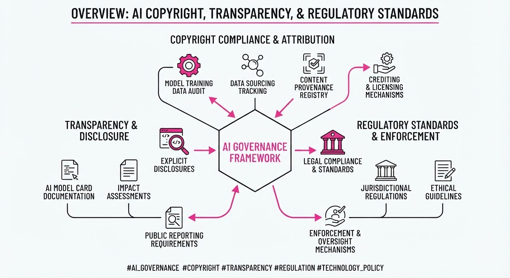
Major technology platforms and legislative bodies are rapidly formalizing frameworks for AI content identification and intellectual property rights. This shift marks a transition from the "wild west" of generative AI toward structured accountability, ensuring that AI-generated media is clearly labeled and that content creators are compensated or protected through formal agreements.
- Copyright Reconciliation: ByteDance has secured a landmark global agreement with the Motion Picture Association (MPA), setting a precedent for how social platforms interact with studio IP.
- Transparency Mandates: Both private policy updates (Snapchat, Apple) and public legislation (California) are mandating clear labeling for AI-generated text, video, and audio.
- Standardization: These moves signal an industry-wide push to reduce misinformation and legal liability before AI-generated content saturates digital ecosystems.
🏭 Industry Angle: Platforms are moving from reactive moderation to proactive structural compliance to mitigate litigation risks and maintain user trust.
2. Key Details & Timeline (with numbers)
- ByteDance-MPA Deal: A global partnership established to implement copyright protections for MPA-member studio content across ByteDance platforms, effective August 2026.
- Apple Music Labeling: Apple has committed to a labeling initiative for all AI-generated music tracks, with a hard deadline for full implementation by December 31, 2026.
- California Bar Exam Law: New legislation signed by the Governor mandates that any AI-generated content used in the context of bar exams or legal licensing assessments must be explicitly disclosed, effective January 1, 2027.
- Snapchat Policy: Updated Spotlight submission guidelines now require users to disclose AI-generated video, with enforcement protocols active as of August 2026.
3. By the Numbers
| Metric | Before | After | Delta / Status |
|---|---|---|---|
| Apple Music AI Labeling | No mandatory labels | Mandatory disclosure | 100% coverage by 2026-12-31 |
| ByteDance/MPA IP Rights | Unstructured/Ad-hoc | Global Framework | Effective 2026-08-01 |
| Legal Disclosure (CA) | Voluntary/None | Mandatory (Bar Exam) | Effective 2027-01-01 |
4. Impact & What to Watch
- Legal Precedent: The ByteDance-MPA deal will likely serve as a template for other platforms (e.g., Meta, X) to negotiate bulk licensing deals with media conglomerates.
- Data Provenance: Expect a surge in "watermarking" and metadata-tagging technologies as companies scramble to meet the year-end 2026 labeling deadlines.
- Watch Next: Monitor whether the California bar exam legislation triggers a "copycat" wave of state-level laws targeting AI transparency in professional certification processes.
- Watch Next: Observe if Apple’s music labeling initiative leads to a decrease in the upload volume of AI-generated tracks on major streaming platforms due to increased scrutiny.
Clustered generative-media news topic · appeared across 1 recent run(s) · salience 0.8/10
Citations:
- Flova.ai Raises $80 Million for AI-Native Video Production — openpr.com (2026-08-29)
- GenAI4EU Initiative Surpasses €700 Million in Funding — europa.eu (2026-08-21)
- Wispr Raises $280 Million for Voice-AI Expansion — promptinjection.net (2026-08-23)
AI Investment Surges: $1.06B Capital Injection into Video, Voice, and EU Infrastructure
1. What Happened & Why It Matters
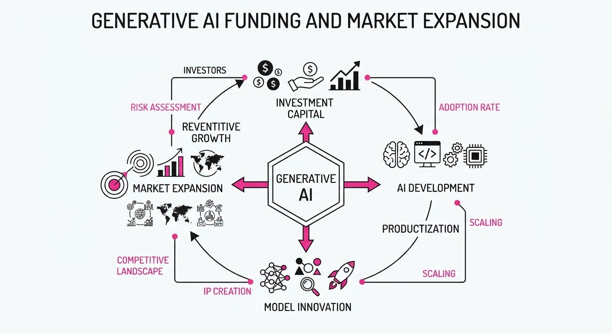
Generative AI investment continues to accelerate, shifting from generalized large language models toward specialized, high-utility verticals like video production, voice-based human-computer interfaces, and sovereign European infrastructure. This capital concentration signals a maturation phase where investors are prioritizing startups that solve specific modality bottlenecks rather than broad-spectrum AI research.
- Vertical Integration: Capital is flowing heavily into "AI-native" workflows that replace legacy production processes.
- Sovereign AI: The European Commission’s funding injection highlights a strategic push to reduce reliance on non-EU AI infrastructure.
- Human-Centric Interfaces: Voice AI is moving beyond simple transcription toward intent-driven, low-latency interaction.
🏭 Industry Angle: The shift from "model-first" to "application-first" funding suggests that incumbents with proprietary data moats in video and voice are now the primary targets for aggressive acquisition or venture scaling.
2. Key Details & Timeline
- Wispr AI: Closed a $280 million Series B round to scale its neural-interface and voice-AI hardware, aimed at creating hands-free device control.
- Flova.ai: Secured $80 million in new funding to expand its AI-native video production platform, focusing on high-fidelity, studio-quality output.
- GenAI4EU: The European Commission’s initiative has officially surpassed €700 million in total funding, aimed at integrating generative AI into European industrial and public sector workflows.
- Strategic Focus: All three funding events occurred in mid-2026, reflecting a sustained Q3 momentum for specialized generative AI infrastructure.
3. By the Numbers
| Entity | Event | Financial Detail | Date |
|---|---|---|---|
| Wispr AI | Series B Funding | $280M (Total raised) | Aug 2026 |
| Flova.ai | Venture Round | $80M (Total raised) | Aug 2026 |
| GenAI4EU | EU Initiative | €700M (Total commitment) | Aug 2026 |
- Cumulative New Capital: $1.06B (USD/EUR equivalent) deployed into the AI ecosystem within the current reporting cycle.
4. Impact & What to Watch
- Hardware-Software Convergence: Wispr’s massive raise suggests that the next generation of AI agents will rely on custom hardware (wearables) rather than just browser-based interfaces.
- Market Consolidation: With $80M in fresh capital, Flova.ai is likely to initiate aggressive talent acquisition to compete with established video-generation incumbents.
- Regulatory Tailwinds: Watch how the €700M GenAI4EU funds are allocated; strict compliance with the EU AI Act will be a prerequisite, potentially creating a "compliance-first" moat for European startups.
- Watch Next: Monitor for M&A activity involving these startups as larger cloud providers seek to integrate specialized video and voice stacks into their existing enterprise suites.
Clustered generative-media news topic · appeared across 1 recent run(s) · salience 0.8/10
Citations:
- Adobe Firefly Audio Tools Now Generally Available — adobe.com (2026-08-25)
- Meta Releases Muse Spark 1.2 and Muse Code — campaignme.com (2026-08-25)
- OpenAI Introduces ChatGPT Work and Study Mode — campaignme.com (2026-08-25)
- Canva Expands Design Integration into Google Search — campaignme.com (2026-08-25)
AI Ecosystem Shifts: From General Chatbots to Specialized Agentic Workflows
1. What Happened & Why It Matters
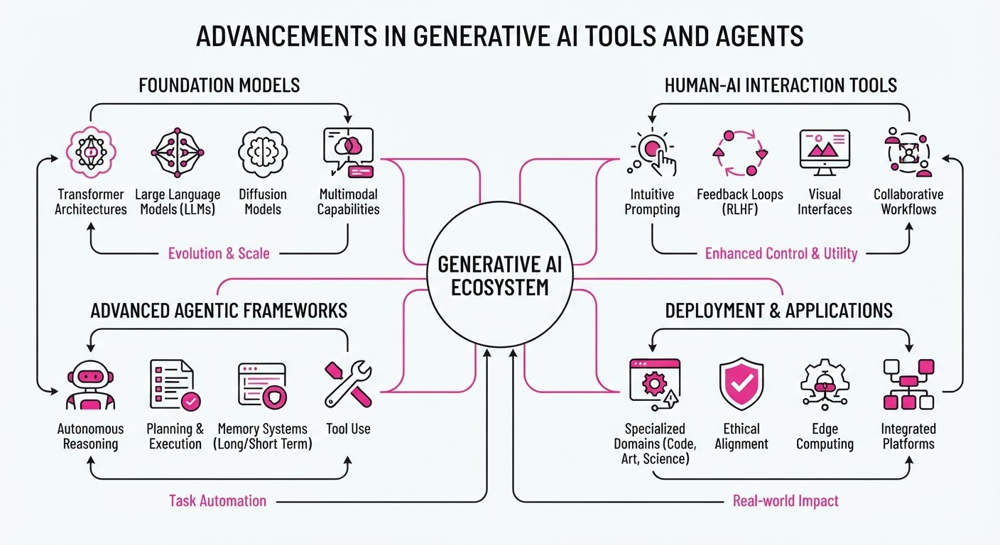
Major tech players have shifted from general-purpose LLMs to specialized, agentic tools designed for specific professional and educational tasks. Recent deployments focus on autonomous execution, persistent memory, and seamless platform integration to reduce "context switching" for users.
- OpenAI launched "Study Mode" to transform ChatGPT into an interactive, Socratic-style tutor.
- Meta released "Muse Code" and "Muse Spark 1.2," a coding-agent harness featuring persistent subagents for complex software engineering.
- Adobe moved its generative audio tools (Music, Speech, Sound Effects) to general availability, emphasizing commercial safety.
- Canva expanded design-to-search integration, allowing users to initiate design workflows directly from Google Search.
🏭 Industry Angle: The competitive frontier has moved from "model capability" to "workflow integration," where the winner is determined by how deeply an AI can embed itself into existing professional software stacks.
2. Key Details & Timeline
- Meta's Coding Leap: Muse Spark 1.2 supports a context window of up to 1,048,576 tokens and introduces "persistent subagents" that retain repository knowledge across sessions to prevent conflicting file edits.
- Adobe's Audio Suite: Generally available as of 2026-08-20, the tools allow creators to generate commercial-grade audio directly within the Firefly interface, eliminating the need for separate licensing subscriptions.
- ChatGPT Study Mode: Launched 2026-07-29, this mode shifts the AI from providing direct answers to a guided, step-by-step learning approach using Socratic questioning.
- Canva/Google Integration: Accessible as of 2026-08-25, users can trigger design creation via plain-English prompts in Google Search, resulting in a clickable Canva link in under 60 seconds.
3. By the Numbers
- Meta Muse Spark 1.2 Pricing (Standard Tier): 1.25 (Input) /0.15 (Cached) / $4.25 (Output) per million tokens, effective 2026-08-14.
- Meta Muse Spark 1.2 Pricing (Contributor Tier): 0.10 (Input) /0.002 (Cached) / $0.20 (Output) per million tokens (data used for training), effective 2026-08-14.
- Adobe Firefly Video Generation: 9.99/mo (20 clips) →29.99/mo (70 clips), effective 2026-08-25.
- Web Search API (Meta): $2.50 per 1,000 queries, effective 2026-08-14.
4. Impact & What to Watch
- Commoditization of Coding: Meta’s aggressive pricing for "contributor" tiers suggests a strategy to trade data for model dominance, potentially pressuring other coding assistant providers.
- Shift in EdTech: OpenAI’s "friction-based" learning model (Study Mode) may force a broader industry pivot away from "instant answer" chatbots toward more pedagogically sound AI tutors.
- Watch Next: Monitor whether enterprise users adopt Muse Code’s persistent subagent architecture for large-scale production codebases, and if Adobe’s "commercially safe" audio model forces competitors to disclose their training data sources more transparently.
Engineering blog · Google · Published: 2026-08-04 · salience 9.2/10
Why it matters: Provides critical architectural insights into latency and token efficiency for production-grade generative pipelines.
Read the post: Google
Scaling Agentic Workflows with Gemini 3.6 Flash
1. What They Built & Why
Google released the Gemini 3.6 Flash series and supporting models to address the "production agent economics" problem: the need for high-reasoning, low-latency performance in agentic pipelines. These models are engineered to reduce the total cost of ownership for autonomous agents by minimizing token consumption and execution steps in multi-step workflows.
2. How It Works (the practical bits)
- Architectural Efficiency: Gemini 3.6 Flash introduces optimizations that consume 17% fewer output tokens than its predecessor (3.5 Flash) for identical tasks, with up to 65% reduction in long-horizon engineering benchmarks like DeepSWE.
- Reduced Execution Loops: The model is tuned to require fewer reasoning steps, tool calls, and conversational turns to complete complex tasks, directly lowering latency and operational costs.
- Native Computer Use: "Computer use" is now a built-in, client-side tool accessible via the Gemini API, enabling models to interact directly with OS-level environments for prototyping and diagnostics.
- Action Bias Mitigation: The model is specifically trained to avoid unsolicited edits during read-only diagnostic tasks, improving reliability in IDE-integrated agent environments.
3. Takeaways You Can Apply
- Prioritize Output Token Efficiency: When scaling agents, focus on the "cost per successful task" rather than just model price. A model that requires 17-65% fewer tokens to reach a solution is often cheaper than a lower-priced, less-efficient model.
- Optimize for "Fewer Turns": Evaluate your agentic pipelines for "loop spiraling." If your model requires excessive tool calls or debugging iterations, consider switching to models explicitly tuned for multi-step orchestration to reduce total latency.
Engineering blog · Artefact · Published: 2026-08-10 · salience 8.5/10
Why it matters: Offers a necessary framework for evaluating reliability in agentic systems, essential for building robust generative media workflows.
Read the post: Artefact
A Framework for Evaluating Autonomous Agent Workflows
1. What They Built & Why
Artefact outlines a rigorous evaluation methodology for autonomous agents, moving beyond simple prompt-response metrics. As agents transition from conversational chatbots to complex systems—such as procurement automation—standard evaluation fails because agent outputs depend on non-deterministic chains of tool calls and branching logic. The authors provide a blueprint for measuring reliability, compliance, and trajectory quality in production systems.
2. How It Works (the practical bits)
- Trajectory-Level Rubrics: Instead of evaluating single LLM responses, they score the entire sequence of actions (the "trajectory") against defined success criteria.
- Scenario Libraries: Teams develop use-case-specific libraries of scenarios to test agent behavior before deployment, ensuring coverage of edge cases.
- Structured Logging: Every agent step and tool invocation is logged to enable granular auditing of decision-making processes.
- LLM-as-a-Judge: They utilize separate, calibrated LLMs to evaluate agent performance, ensuring the evaluation criteria are consistently applied across complex workflows.
- Continuous Monitoring: Evaluation is integrated as a core workstream within their "AI Factory" methodology, running in parallel with development.
3. Takeaways You Can Apply
- Evaluate Before You Code: Define your success metrics and "good" trajectory rubrics before writing agent code to avoid retroactive validation hurdles.
- Shift to Process Metrics: Track whether the agent followed correct logic or tool-calling sequences, rather than just checking if the final output "looks" correct.
Engineering blog · NVIDIA · Published: 2026-08-06 · salience 7.8/10
Why it matters: Details the underlying simulation techniques for physical AI, relevant for engineers building generative environments and world models.
Read the post: NVIDIA
Scaling Physical AI with Open World Models in Omniverse
1. What They Built & Why
NVIDIA has advanced its "Open World Models" within the Omniverse platform to bridge the gap between generative AI and physical reality. To enable robots to reason and operate in unstructured environments, they developed a system that leverages high-fidelity simulation to train agents on complex, physics-compliant tasks. This approach moves beyond static image generation, providing a scalable framework for robots to learn, collaborate, and execute tasks in digital twins before deployment.
2. How It Works (the practical bits)
- Physics-Informed Simulation: Utilizes NVIDIA PhysX and Material Definition Language (MDL) to ensure generative outputs adhere to real-world laws of gravity, collision, and material properties.
- Foundation Model Integration: Employs large-scale world models trained on synthetic and real-world sensor data to predict environmental dynamics and object interactions.
- Orchestration: Uses the OpenUSD (Universal Scene Description) framework as the backbone to unify multi-modal data, allowing seamless interoperability between generative assets and simulation environments.
- Sim-to-Real Pipeline: Implements automated domain randomization within Omniverse to expose agents to infinite environmental variations, ensuring robustness when transitioning to physical hardware.
3. Takeaways You Can Apply
- Prioritize Physics over Pixels: If your generative media must interact with the world, enforce physical constraints (e.g., USD/PhysX) early in the pipeline to prevent hallucinated behaviors.
- Leverage Universal Formats: Adopt OpenUSD to standardize your asset pipeline, enabling your generative models to interact with diverse simulation and robotics software ecosystems.